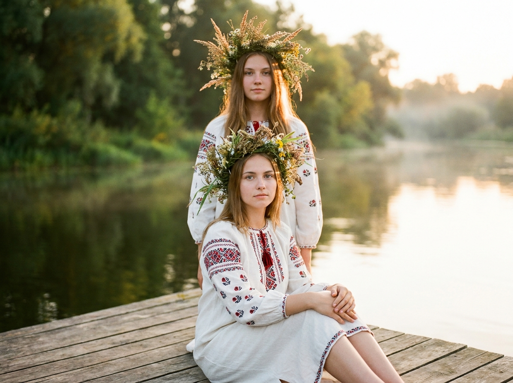
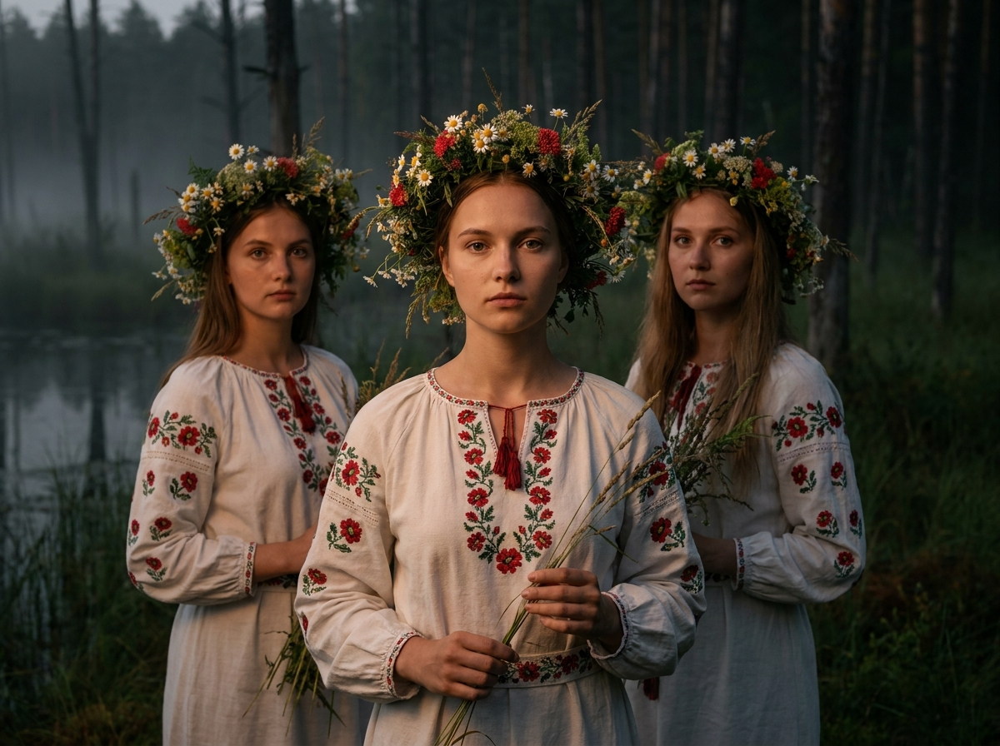
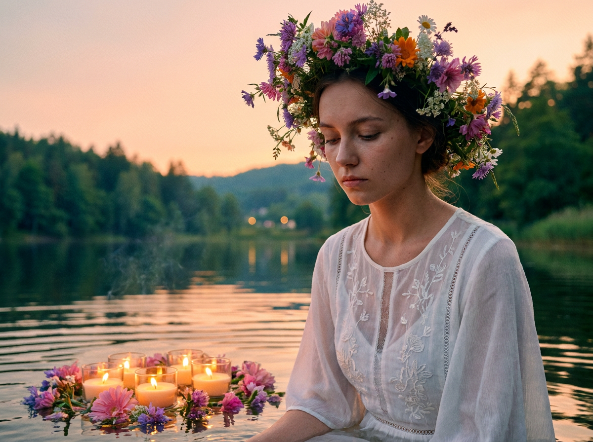
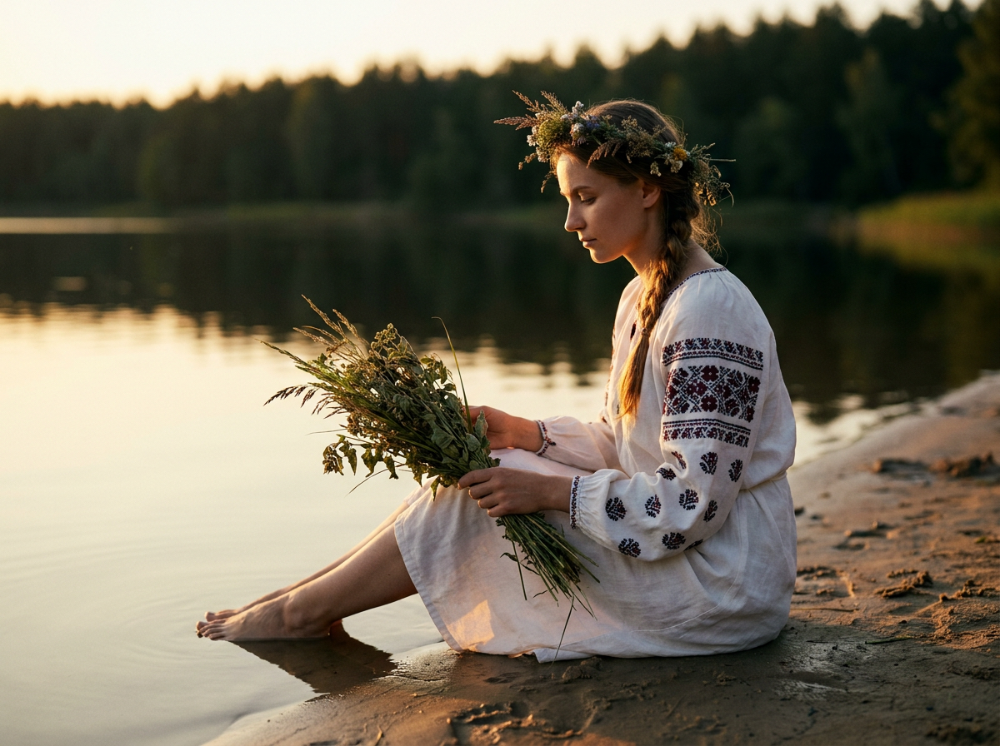
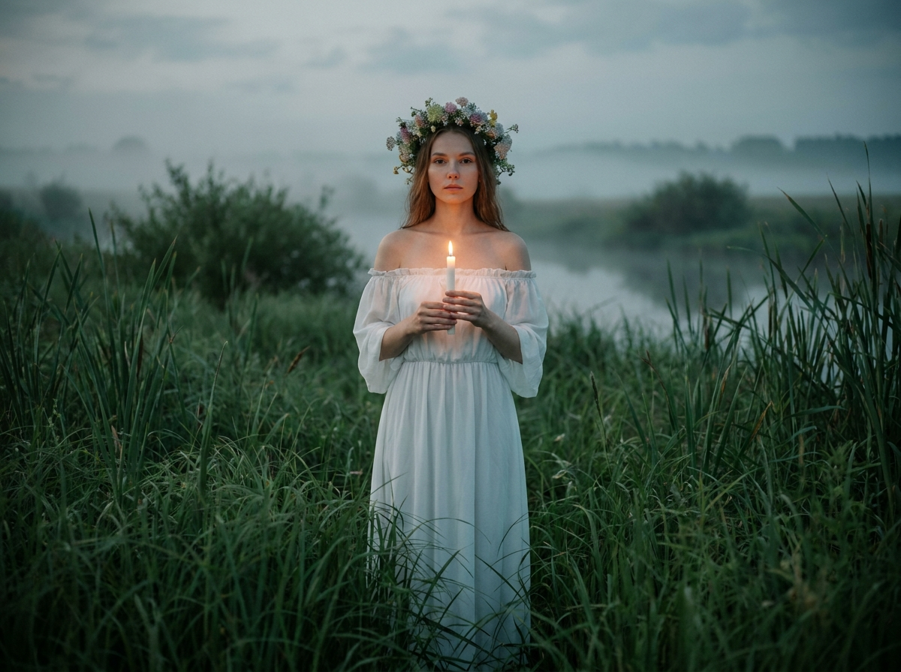
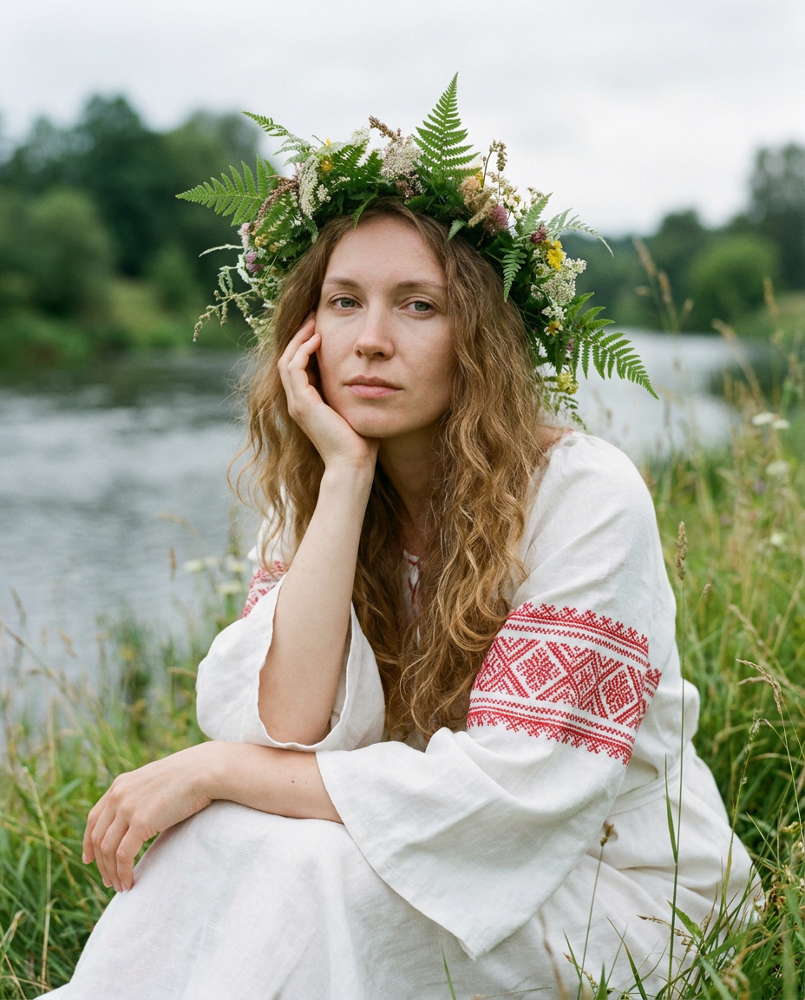
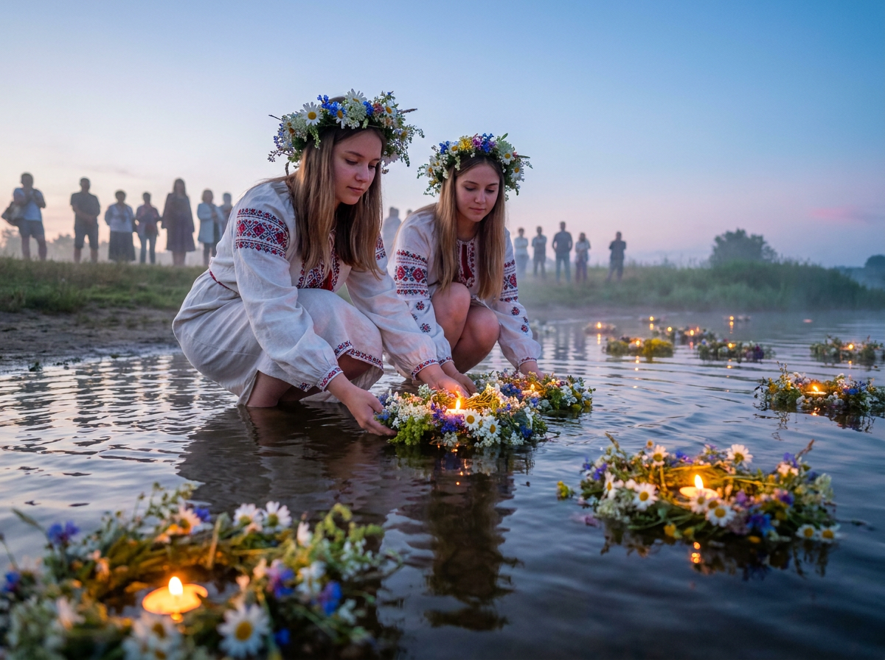
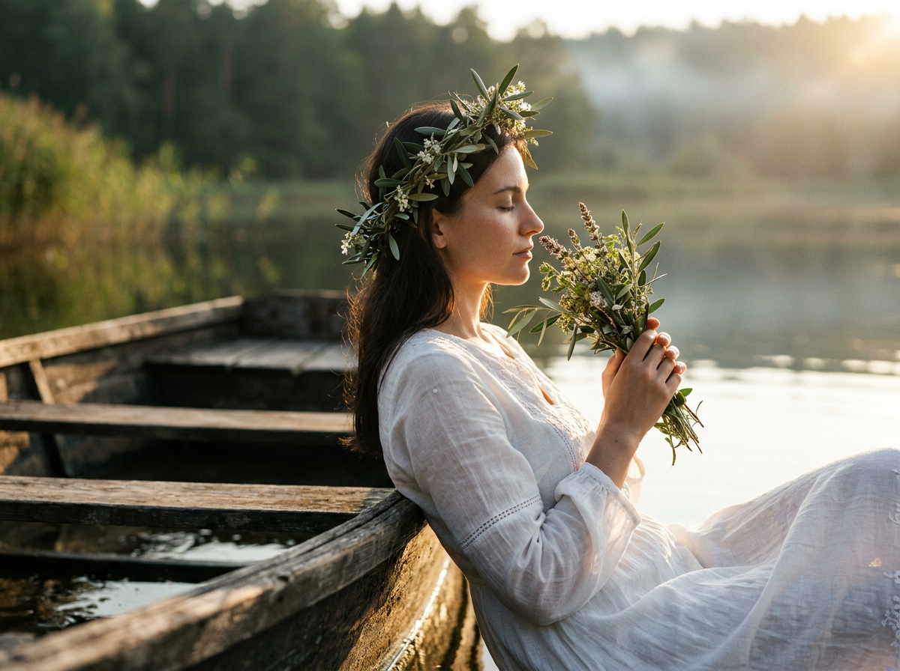
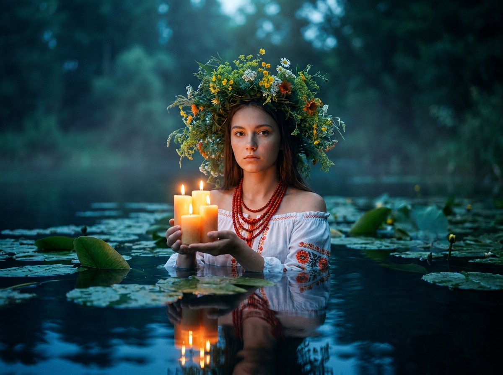
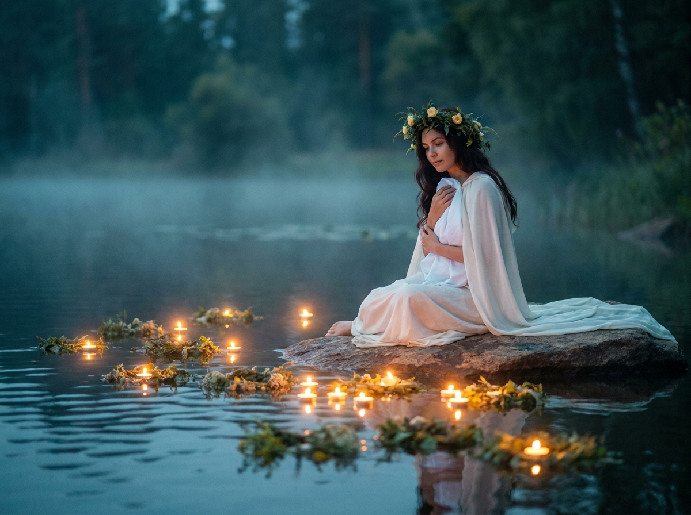

ИИ-фото «Иван Купала»: 10 промптов для нейросети

Красивый купальский кадр сложно собрать случайно: вода получается плоской, свечи теряются в темноте, а венок выглядит пластиковым. Генерация помогает заранее задать свет, позу, одежду и настроение, а затем подобрать удачный вариант без долгих съёмок у реального водоёма.
Внутри — 10 промптов для ИИ-фото «Иван Купала»: камерные портреты у реки, девушки в траве, запуск венков со свечами, ночная вода с кувшинками и мистические сцены на камне посреди озера. Каждый текст можно использовать с референсом лица.
Как сгенерировать такое фото: пошагово
Нужен снимок анфас при ровном свете, лицо в кадре целиком, без тёмных очков и головных уборов. Разрешение от 1000 пикселей по короткой стороне. Чем чётче исходник, тем точнее модель повторит черты.
Выберите сценарий ниже и нажмите «Копировать» — текст уйдёт в буфер целиком, вместе с командой сохранения внешности. Эта команда стоит первой строкой и отвечает за то, чтобы на выходе было ваше лицо, а не случайное.
Кнопка «Сгенерировать» рядом с каждым промптом открывает модель в новой вкладке. Nano Banana Pro работает с референсом лица — в отличие от моделей, которые генерируют портрет с нуля и узнаваемость теряют.
Промпт — в поле ввода, портрет — через загрузку референса. Порядок значения не имеет, но без референса команда сохранения внешности работать не будет: модели нечего сохранять.
Для сторис и ленты берите 9:16, для превью и обложек — 4:3. Первый результат редко идеален: если поза или свет ушли не туда, поправьте соответствующую часть промпта и запустите заново. Обычно хватает двух-трёх итераций.
10 промптов для генерации
1. Две девушки у реки
Строго сохранить внешность по загруженному референсу: черты лица, пропорции, мимику и текстуру кожи без изменений. Кинематографичный фотореалистичный вертикальный кадр на берегу тихой реки или озера в тёплых сумерках, с мягким золотым светом. Камера находится немного позади сидящей модели и на уровне её глаз. На переднем плане, по колени, молодая девушка сидит на краю деревянного плота или моста: корпус развёрнут к объективу на три четверти, руки спокойно лежат на коленях, ноги опущены вниз и частично скрыты перспективой. Она смотрит прямо в камеру с мягким выражением лица. Позади и чуть выше стоит вторая девушка, расположенная по центру между зелёным размытым фоном; её корпус также обращён к объективу под углом три четверти, руки свободно опущены. Обе героини выглядят естественно, без изменения индивидуальных пропорций и мимики. Натуральная кожа, реалистичная фактура дерева, малая глубина резкости, объектив 85 мм, f/2, вертикальный портрет.
2. Три девушки в тумане

Строго сохранить внешность по загруженному референсу: черты лица, пропорции, мимику и текстуру кожи без изменений. Фотореалистичный кинематографичный групповой портрет в вертикальном формате, приглушённая ночная или сумеречная палитра. Локация — кромка болотистого водоёма, за ним виден далёкий лес с тёмными стволами, над водой стелется лёгкий туман. Камера установлена на уровне лиц. В центре ближе к объективу стоит или слегка полуприседает главная героиня, смотрит прямо в камеру спокойно и серьёзно; руки естественно опущены либо осторожно держат полевые травы у нижнего края кадра. На переднем плане частично видны стебли и зелень. Слева и справа за ней стоят ещё две девушки, расположенные рядом и немного глубже, с тихими, сдержанными выражениями лиц. Сохранить естественную мимику, индивидуальные черты и пропорции каждой героини. Мягкий рассеянный свет, влажный воздух, реалистичная кожа, объектив 50 мм, f/2.2, деликатное боке.
3. Венок и свечи у озера

Строго сохранить внешность по загруженному референсу: черты лица, пропорции, мимику и текстуру кожи без изменений. Кинематографичный фотореалистичный портрет у спокойного озера на закате, золотой час, центральная композиция, средний план с переходом в крупный портрет, камера на уровне груди. Девушка сидит или полуприседает у самой воды. Её лицо выглядит естественно, взгляд опущен, глаза слегка прикрыты, выражение задумчивое и тихое. Волосы частично падают на плечи. На голове объёмный живой венок-корона из полевых и садовых цветов: крупные фиолетовые, розовые, оранжевые и белые бутоны, мелкие соцветия, зелёные листья, чуть растрёпанная натуральная форма. На поверхности воды перед героиней хорошо заметна композиция из цветов и небольших свечей; огонь даёт тёплые блики и отражения. Реалистичная кожа и ткань, лёгкая дымка над водой, объектив 85 мм, f/1.8, высокая детализация.
4. Травы у кромки воды

Строго сохранить внешность по загруженному референсу: черты лица, пропорции, мимику и текстуру кожи без изменений. Вертикальный или почти квадратный фотореалистичный кадр у реки или озера на закате. Камера расположена сбоку и на уровне сидящей девушки, средний план. На переднем плане видна береговая линия: песок или мелкий грунт, мокрые следы, влажная полоса у воды; линия берега уводит взгляд вдоль спокойной поверхности. Девушка сидит прямо у кромки, корпус слегка повёрнут вправо, в мягком три четверти профиле. Голова наклонена, внимание сосредоточено на пучке сухих трав, листьев и соцветий в обеих руках. Выражение лица спокойное, задумчивое, движения естественные. Растительная композиция выдержана в зелёно-коричневой гамме, стебли тонкие, отдельные семенные коробочки хорошо различимы. Тёплый боковой свет, натуральные тени, влажная фактура песка, объектив 50 мм, f/2.8.
5. Свеча в белом платье

Строго сохранить внешность по загруженному референсу: черты лица, пропорции, мимику и текстуру кожи без изменений. Гиперреалистичный вертикальный кадр с композицией 1:1 по отношению к референсу, героиня стоит строго по центру и показана в полный рост примерно до середины икр. Взгляд направлен немного в сторону объектива, плечи расслаблены, выражение лица спокойное. Обеими руками она держит одну тонкую белую горящую свечу на уровне груди или живота; янтарное пламя подсвечивает пальцы и даёт аккуратные отблески на коже. На голове живой венок из маленьких полевых цветов пастельных белых, жёлтых и розовых оттенков, с лёгкой неровностью ручной работы. На девушке белое платье с открытыми плечами, спущенная линия декольте показывает ключицы, длинные свободные рукава и струящаяся слегка объёмная ткань. Золотой сумеречный фон у воды, мягкий контровой свет, объектив 85 мм, f/2, естественная фактура ткани, высокая детализация.
6. В высокой траве

Строго сохранить внешность по загруженному референсу: черты лица, пропорции, мимику и текстуру кожи без изменений. Фотореалистичная lifestyle-сцена в вертикальном формате 4:5 на берегу, среди высокой зелёной травы. Девушка сидит или полулежит в центре кадра, корпус немного развёрнут вправо, взгляд направлен в объектив, выражение лица спокойное и слегка задумчивое. Правая рука поднята к лицу: пальцы мягко касаются щеки или скулы, остальные части руки естественно лежат на плече или вдоль тела. В кадре тело видно примерно до колен и подола платья, ноги уходят в траву, лишних частей тела нет. Волосы длинные, кудрявые или волнистые, светло-русого либо каштаново-русого оттенка, с естественным блеском; часть прядей лежит у лица и на плече. Лёгкое белое платье с мягкими складками, отдельные травинки на переднем плане, солнечные блики, натуральная цветопередача, малая глубина резкости, объектив 50 мм, f/1.8.
7. Венки плывут по воде

Строго сохранить внешность по загруженному референсу: черты лица, пропорции, мимику и текстуру кожи без изменений. Горизонтальный кинематографичный фотореалистичный кадр на рассвете или закате у реки либо озера. Камера установлена низко, почти у поверхности воды, чтобы в переднем плане были хорошо видны рябь, отражения и огонь свечей на венках. Слева впереди две молодые женщины стоят на коленях или приседают в мелкой воде, корпуса наклонены вперёд; они запускают или осторожно опускают на воду горящие цветочные композиции с маленькими свечами. На них белые или светлые традиционные рубахи и платья из лёгкой ткани, на рукавах и груди яркая красная или бордовая вышивка с этническим орнаментом. На головах небольшие венки из полевых цветов. Пламя даёт тёплые точки света, в воде тянутся длинные отражения, дальний берег мягко размывается. Реалистичные складки одежды, естественные позы, объектив 35 мм, f/2.8, широкий динамический диапазон.
8. Профиль у старой лодки

Строго сохранить внешность по загруженному референсу: черты лица, пропорции, мимику и текстуру кожи без изменений. Кинематографичный фотореалистичный портрет у спокойной воды, профиль или мягкий полупрофиль справа, средний план. Девушка стоит либо слегка наклоняется у края старой деревянной лодки или плота, одной рукой опирается на грубую доску. На переднем плане крупно виден борт: потёртая древесина, щели, неровные волокна и следы времени; рядом отражается гладкая вода. На голове венок из оливково-зелёных листьев и небольших светлых цветков, немного растрёпанный, собранный естественно. Девушка держит у лица небольшой букет или веточку, внимательно смотрит на неё. На ней белое воздушное платье из льна или хлопка с полупрозрачными рукавами, тонкой вышивкой и заметной тканой фактурой; силуэт свободный, ткань струится, палитра белая с тёплыми золотистыми бликами. Закатный свет, тихая вода, объектив 85 мм, f/2, реалистичная детализация.
9. Свечи среди кувшинок

Строго сохранить внешность по загруженному референсу: черты лица, пропорции, мимику и текстуру кожи без изменений. Фотореалистичная ночная сцена на поверхности озера или пруда, вертикальная композиция, камера расположена на уровне воды. В центре девушка стоит или полуприседает в мелкой воде, а её отражение чётко читается на тёмно-синей поверхности. Вокруг плавают кувшинки и широкие листья; несколько листьев на переднем плане резкие, дальний фон растворяется в мягком боке. Корпус героини слегка развёрнут к камере на три четверти, взгляд прямо в объектив, выражение лица спокойное и серьёзное. В обеих руках она держит три-четыре толстые свечи или коротких свечных огарка. Яркое тёплое пламя освещает кисти и нижнюю часть лица снизу, на воде появляются золотистые дорожки. Ночная синяя гамма, влажная кожа и волосы, без лишних источников света, объектив 50 мм, f/1.8, высокая детализация.
10. На камне посреди озера

Строго сохранить внешность по загруженному референсу: черты лица, пропорции, мимику и текстуру кожи без изменений. Кинематографичный фотореалистичный кадр в ночной или сумеречной атмосфере у тихого водоёма. На переднем плане по поверхности воды плывут небольшие свечи, каждая даёт янтарное свечение и мягкое отражение на ряби; вокруг них дрейфуют маленькие венки из трав, зелени и мелких цветов. В центре композиции девушка сидит на крупном плоском камне посреди озера. Она обнимает себя руками и прижимает к груди белую ткань, платок или край платья — поза защитная, но нежная. На ней длинное белое платье или лёгкая накидка с плавными складками. Волосы распущены и перекинуты через одно плечо. Взгляд направлен немного в сторону или вниз, настроение тихое и задумчивое. Тёмная вода, слабый туман, отражения огней, мягкий контровой лунный свет, объектив 35 мм, f/2.2, вертикальный кадр, реалистичная фактура ткани.
Что важно учесть в этом стиле
Купальская эстетика держится на контрасте: белая ткань и зелень хорошо читаются на фоне синей ночной воды, а свечи добавляют локальный янтарный свет. Для портрета подойдёт объектив 85 мм с диафрагмой f/1.8–2.2, для сцены с несколькими героями и отражениями — 35–50 мм при f/2.8.
Не перегружайте кадр декоративными деталями. Лучше задать один главный акцент — венок, свечу или отражение, — а остальное оставить мягко размытым. Для референса лица используйте чёткую фотографию анфас без очков, сильных теней и фильтров; после генерации проверьте глаза, пальцы, огонь и симметрию венка.
Идеи для вариаций
- Замените озеро на узкую лесную реку с деревянным мостом и туманом над водой.
- Добавьте вышитый рушник, глиняный кувшин или плетёную корзину с травами.
- Попросите нейросеть показать момент, когда венок отплывает от берега, а героиня смотрит ему вслед.
- Сделайте версию после дождя: мокрые волосы, капли на ткани и отражение фонарей в лужах.
- Для более мистического настроения добавьте слабую лунную дорожку, светлячков и дымку между деревьями.
Как собрать свой промпт
Сначала задайте формат и точку съёмки: вертикальный портрет 4:5, горизонтальный кадр у воды или камера на уровне поверхности. Затем опишите героиню, позу, направление взгляда и действие руками. После этого добавьте одежду, венок, состояние воды и фон.
Свет лучше формулировать отдельно: «тёплое пламя свечи снизу», «золотой час сбоку», «холодный лунный контровой свет». В финале укажите объектив, диафрагму, глубину резкости и ограничения: без лишних пальцев, деформации лица, пластиковых цветов, текста и водяных знаков. Для одного сценария заложите 6–10 генераций и меняйте за раз только один параметр.
Ошибки, из-за которых кадр не получается
- Слишком много объектов. Свечи, цветы, лодка и несколько героинь начинают конкурировать; выделите один главный акцент.
- Нечёткий источник света. Укажите, откуда идёт освещение, иначе лицо и отражения будут выглядеть несогласованно.
- Общие слова вместо позы. Фразы «красивая девушка у воды» недостаточно; опишите положение корпуса, рук, головы и ног.
- Слабый референс лица. Размытая фотография или профиль с волосами на лице часто приводит к потере сходства.
- Игнорирование анатомии. Для групповых сцен задайте порядок героев и расстояние между ними, а для рук добавьте запрет на лишние пальцы и слияние кистей.
Частые вопросы
Как сделать такое ИИ-фото бесплатно?
Можно начать с Kandinsky и Шедеврума: они подходят для атмосферных сцен и текстовых запросов, но точность лица по референсу и число доступных генераций ограничены. Krea AI и Arena.ai удобны для тестов разных моделей, однако бесплатный доступ может менять лимиты, очередь и набор функций. Ни один сервис не гарантирует идеальное сходство с первого раза: для Face Reference нужны поддерживаемая модель, качественный снимок и несколько попыток.
Как сохранить сходство с человеком на фотографии?
Загрузите один или несколько резких референсов без фильтров, укажите режим Face Reference или Identity Lock, а в промпте опишите только сцену и позу. Не меняйте одновременно возраст, причёску, макияж и ракурс. Если лицо всё равно «плывёт», снизьте стилизацию, выберите портретный объектив и повторите генерацию с тем же текстом.
Как сделать свечи и отражения реалистичными?
Пропишите положение камеры у поверхности воды, небольшую рябь, отдельное отражение каждого огонька и тёплый свет на ближайших руках или лице. Для ночной сцены задайте тёмно-синюю воду и ограниченное число свечей. Слишком много источников света часто превращает кадр в яркую иллюстрацию.
Какой формат выбрать для публикации?
Для сторис и вертикальных постов используйте 4:5 или 9:16, для обложки и пейзажной сцены — 16:9. Генерируйте минимум в 1024 пикселя по короткой стороне, а затем увеличивайте удачный кадр. Перед публикацией проверьте обрезку венка, кистей и отражений по краям изображения.